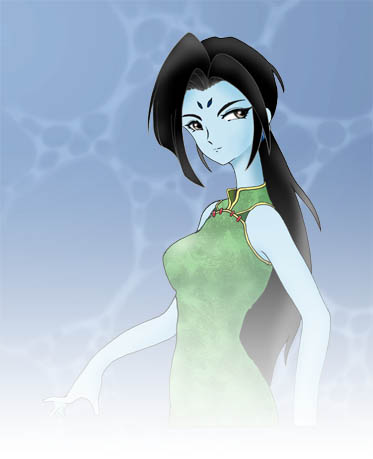
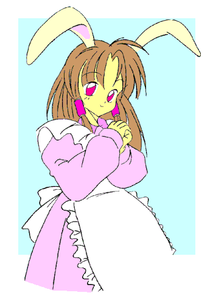

戻る
この都市の入り組んだ路地の合間に、年齢不詳の女性が店主をしているその店はあった。
その店には、ある趣味の若者達や若い女性達等の口コミで、賑わうと言う程ではないにしろ、そこそこの客が尋ねてくる。
定休日というものはなく、店主の気紛れで度々「休業中」の札が掛かる。
もっとも、この店が何の店なのかは、常連客でも答えることが出来ないだろう……
その店の名を、『ミストレスハウス』と言った……
ミストレスと奇妙な仲間達
作：夜夢
狂才!?沼池教授の生活 賢者の石（？）争奪編 第一話
狂才!?沼池教授の生活 賢者の石（？）争奪編 第二話
狂才!?沼池教授の生活 賢者の石（？）争奪編 第三話
|
ミストレスと奇妙な仲間達 〜公開設定集〜
これは、私（夜夢）の作りました物語の一つである「ミストレスと奇妙な仲間達」シリーズの設定を、文庫の皆様に利用して頂ければと思い、その設定を公開させて頂いたものです。
文庫作家の皆々様、もしよろしければこの店やそこにいる面々を、端役や小道具にでも御利用くだされば幸いです。
◎ 登場人物
ここには、この物語に登場する人物達の紹介を書かせて貰います。
最初は名前（ちなみに、括弧内の呼び名は通称・通り名です。）、説明文、特殊能力等（魔法や使い魔としての能力等）、特技等（魔法的ではない特技、能力等）、人化維持用装身具（ミストレスの使い魔等に記入、外で人の形態を維持する為の装身具等のアイテム）、ファミリアー・ランク（使い魔等にのみ記入、使い魔の総合的な強さを5段階評価した物です。）の順で表記します。
ちなみに、ミストレスの使い魔達は"ミストレスハウス"から外に出ると、本性とする動物の姿に変わってしまいます。（例外的に"ふく"は変化しません。また、ミストレスの魔法の品によって変化しないようにすることは出来ます。）
○ ミストレスハウスの面々
- 桐竹 愛（ミストレス／ミストレス・キリク）
魔女の店"ミストレスハウス"の女主人、ショートボブの髪に丸眼鏡がチャームポイントの年齢不詳の美人。ミストレスハウスに住む面々の主人である魔女です。物腰は丁寧ですが、ちょっぴり（？）お茶目です。魔法の品を作成する魔女としてはかなり有数な腕の持ち主であり、"ミストレスハウス"には方々の魔法使いの方からの数々の依頼が舞い込んで来るようです。
特殊能力等：魔法の品物や薬品の作成（直接的な魔法は使えない。自分の造った魔法の品を使って魔法を起こすことはできます。）、魔法の品の鑑定等・・・
特技：菓子作り、お茶淹れ、手工芸等・・・
- ふく（飛夜 蝠也）
"ミストレスハウス"の渉外的な仕事を任されると共に、ウェイターでもあり、ミストレスに仕えるファミリアー（使い魔）達のリーダーでもある白蝙蝠の精、普段は純白のタキシードに白いマント（このマントは翼の変化した物なので取り外せません。）を纏う薄茶の髪と目を持つ白皙の美青年の姿をとる。かつては、桐竹愛嬢の友人（♀）であったが、諸般の事情によりこの姿となる。（詳しくは、第十話にて）"ミストレスハウス"創設当初からいる古参の使い魔であり、その能力はミストレスに仕える使い魔達の中で最も高く、彼女等中唯一、"ミストレスハウス"の外でも人間形態を維持できる。なお、暗示や超音波攻撃の能力を使う時には瞳が青白く発光する。（ちなみに、この暗示能力はミストレス等の魔法使いやBランク以上のファミリア等を除けば、ほぼ間違いなく抵抗することは出来ません。）
 普段は優雅な好青年の風を装っているが、人間だった頃の名残で"こう"と少年愛をやりたがる傾向が・・・（苦笑）
特殊能力等：飛行能力（夜間飛行、高速飛行）、超聴覚、暗視能力、超音波攻撃（超音波ビーム、錯乱音波）、暗示能力、周囲の者への幸運付与、ほぼ完全な人間形態をとる、白蝙蝠・白大蝙蝠への変身等・・・
特技等：ピアノ演奏、同人誌作成（少女漫画・やおい小説等々（笑））等・・・
人化維持用装身具：純白のシルクハット、銀縁のサングラス（現在では、これらの使用に頼らずとも人間形態が維持できますが・・・）
ランク：B+
- ひぃ（雨宮 姫子／グレミー（Glemy））
"ミストレスハウス"の事務等を任されている。"ふく"と同格の蛙の精、青い肌をした痩身の絶世の美女の姿をしている。かつては桐竹愛嬢の友人（♂）であったが、諸般の事情により（・・・）この姿になる。（詳しくは、第十話にて）普段は陰鬱で、ちょっと近付き難い雰囲気を持っているが、入浴後暫くは一転雰囲気は明るくなる。一日に少なくとも3回は入浴をし、これを邪魔されると畏ろしく不機嫌になる。普段から自身の技術を生かしてプログラム作成のアルバイトをしている。（ちなみに、グレミーとは彼女のハンドル・ネーム・・・一部の方々の間で謎の人物として有名らしい・・・）
なお、彼女の分泌する粘液は、ミストレスの調合する魔法薬の主原料の一つである。
特殊能力等：長く伸びる舌（その力は強力）、超跳躍、壁面這行、身体の各所から各種の毒・薬となる粘液を分泌、姿を見えなくさせる、水中での呼吸停止時間が長い、蛙への変身（雨蛙・蟇蛙等バリエーションあり）等・・・
特技：電気工学技術（主にコンピューター関係）、コンピューター操作（プログラムの作成から国家機関へのハッキングに至るまで・・・（冷汗））、潜水遊泳、腹話術？等・・・
人化維持用装身具：魔法のコンパクト（これに収まっている白粉）、青いレンズの色眼鏡
ランク：B
- こう（飛夜 蝙治）
 "ミストレスハウス"のウェイターである黒蝙蝠の精、黒い皮翼を持つ浅黒い肌の野性味ある美少年の姿をしている。かつては"ミストレスハウス"の常連（♀）だったが、諸般の事情（・・・（汗））がありこの姿になる。（詳しくは第十五話にて）言動が幾等か荒っぽい所があるが、根は優しい。ハーブティー等の飲物を用意するのも彼の仕事である。
日頃"ふく"のアプローチを受けている為、彼のことを少々苦手としている。その為か、彼は"ふく"のそれの様な強力な暗示が効かない体質になっている。
また、かつて音大に通っていたらしく音楽に関する知識・技術はかなりあるようだ。
特殊能力等：飛行能力（夜間飛行）、超聴覚、暗視能力、超音波攻撃（超音波ビーム）、暗示に対する耐性、黒蝙蝠への変身等・・・
特技：ヴァイオリン演奏、お茶淹れ、譜面記述、絶対音感等・・・
人化維持用装身具：暗色系の革製ブーツ各種
ランク：D
- うさ（白井 宇佐美）
"ミストレスハウス"のシェフ兼ウェイトレスである白兎の精、白いウサギ耳と房尾に薄茶の髪と紅い目をした色白の美少女の姿をしている。かつては"ミストレスハウス"の客（♂）だったが、諸般の事情（・・・（笑））によりこの姿となる。（詳しくは第二十話にて）少女趣味的なものに目が無く、"ミストレスハウス"のアイドル（若しくは、マスコット）的存在。
実は、人間の時には某空手道場の跡取息子であったらしい。兎の脚力を持った今、その蹴りは殺人的威力が・・・
特殊能力等：超聴覚（"ふく"や"こう"程ではない）、超跳躍力、超人的ダッシュ力、白兎への変身等・・・
特技：空手（及び各種格闘術）、料理、菓子作り、歌唱、ダンス等・・・
人化維持用装身具：淡色系の髪飾り用リボン各種、簡素なデザインのブレスレット
ランク：D-
- ねこ（黒木 美猫）
“ミストレスハウス”のウェイトレスである黒猫の精、青味がかった光沢の黒い猫耳と猫尻尾に緑色の猫目を持つ黒髪で色白の美少女の姿をしている。かつては普通の大学生（♂）だったのだが、諸般の事情により（・・・（爆））この姿となる（詳しくは、第一話にて）。今は見習い店員として“ひぃ”の手伝い等をしている。変化して間が無い為、戸惑うことしばしばであった。
しかし、それらにも慣れた頃に、ミストレスより調合薬を処方されて、“不幸の邪眼”の能力を獲得した（第二十一話にて）。ただ、その能力の制御が出来ない為、“ふく”の所有していた魔法の色眼鏡（人化維持用兼邪眼抑制用装身具）が欠かせない状態にある。
特殊能力等：暗視能力、鉤爪に変化可能な爪、気配や足音等を消す、不幸の邪眼、黒猫への変身等・・・
特技：（コンピューター）ゲーム、コンピューター操作等・・・
人化維持用装身具：鈴付きの布製チョーカー、銀縁の色眼鏡（“ふく”よりの譲渡品）
ランク：E+ → D-
○ ウィザーズハウスの面々
- ？（グラン・マスター）
ミストレスこと桐竹愛嬢の師匠にあたる魔法使いです。ミストレスと同じく魔法の店"ウィザーズハウス"を経営しているようですが、その全貌は謎に包まれています。分かっているのは、グラン・マスターと言う通り名と、名立たる魔法の使い手（ルナストライクをやろうと思えば出来るらしいです・・・）の老爺らしいと言うことでしょうか・・・
特殊能力等：魔法・魔術と称されるもの全般（？）・・・
特技：不明・・・
- ？（アール）
グラン・マスターのファミリアーの筆頭である存在、輝く様な金髪と彫りの深い整った顔立ちと赤銅色の肌に長身で鍛えられたと窺える体格と言う姿をしている。グラン・マスターの代理者として、グラン・マスターとほぼ対等の存在とされているらしい。
特殊能力等：炎や光の創造・操作能力、その他の各種魔法、完全な人間形態をとる（各人種へのバリエーションがあるらしい・・・）等・・・
特技：神学、錬金術、神話学（欧州・中東・北アフリカの諸神話）、語学（欧州・中東・北アフリカの諸言語）、武術（剣・槍・弓等各種）、歴史学等・・・
ランク：？（計測不能／A++以上と推定される）
- エルダーン＝オーク
グラン・マスターの古参のファミリアーの一人である古木の精、長い白髪と髭を蓄えた痩身の老人の姿をしている。アールに替わってグラン・マスターのファミリアー達の取り纏めを行ったり、時にはグラン・マスターの影武者をすることもあるようだ。
特殊能力等：周辺状況知覚（自身を中心とした数十kmの状況を知覚する。）、過去見、植物成長促進能力、治癒・治療能力、動植物会話能力、植物操作・支配能力、精神操作能力、怪力、巨木への変身（楢の古木）、完全な人間形態をとる等・・・
特技：神秘学、植物学、薬学、園芸等・・・
ランク：A
- レーン＝ネレイド
グラン・マスターのファミリアーの一人である有翼の人魚、普段は緑味がかった金髪に深い青色の瞳を持つ小麦色の肌の女性と言う姿をしている。グラン・マスターに仕える女性ファミリアー達のまとめ役であり、アールの補佐的な仕事もこなす。諸般の事情からアールとともに行動する機会は少ないが、結構仲は良いようだ。
ちなみに、歌手としても弦楽器奏者としてもかなりのレベルの技量を持っている。特殊能力等：水流・潮流操作、天候操作、水中呼吸能力、飛行能力、音波攻撃（超音波ビーム、錯乱音波）、（声を利用した）暗示及び魅了能力、魚類・鳥類への支配能力、海水魚・海鳥への変身能力、完全な人間形態をとる等・・・
特技：歌唱、弦楽器演奏、潮見、天候予測、航海術、料理（主に魚介類料理）等・・・
ランク：A
- ファング＝シュヴァルツェヴォルフ（ファング＝ブラックウルフ）
グラン・マスターのファミリアーの一人である人狼、黒髪に薄蒼い瞳を持ち、黒い（狼の）毛皮の上着を羽織り、鍛えられた体躯をした精悍な男性の姿をしている。傭兵業を行っているらしく、グラン・マスターの傍にいることは多くないようだ。ちなみに激昂すると手の付けられない暴れ方をするらしい・・・
特殊能力等：幻覚操作系の魔法、超嗅覚、超聴覚（"ふく"等のそれより劣る）、高速走行、暗視、自己再生能力（月光下では顕著）、月光下での身体能力強化、森林に住む獣への支配能力、（魔法の）毛皮を使った肉食獣（狼・熊・屈狸等）への変化、完全な人間形態をとる等・・・
特技：戦闘技術（戦斧、槍、銃火器、格闘術等）、戦術、サバイバル知識等・・・
ランク：A-
- ブラウニー＝ヘア
グラン・マスターのファミリア―の一人である野兎の精、赤褐色の鋭角的なウサギ耳と髪に黒褐色の瞳を持つ、シルクハットを被った痩身の青年の姿をしている。グラン・マスターの使者として方々を走り回っている。また、それ等の一環として、魔法使い達の宅配便的な仕事も行っている。基本的に紳士だが、少し気障な所がある。
ちなみに、"うさ"の恋人でもある。
特殊能力等：超聴覚、超跳躍力、高速走行、異次元の穴（？）を利用した空間転移（人を連れての長距離瞬間移動も可能）、（被っている）シルクハットの中へ無数の品物を格納できる、野兎への変身等・・・
特技：社交儀礼一般（？）、速記等・・・
ランク：B+
- シーラ＝ヴァイセフェル
グラン・マスターのファミリアーの一人である海豹の精、普段は、透き通るような銀髪に薄青色の瞳を持ち、白い毛皮のコートを羽織る白皙の女性の姿をしている。ファングのことを兄と呼んで慕っている。
特殊能力等：幻覚操作系魔法、冷気操作能力（冷気攻撃、気温低下）、冷気耐性、水中での呼吸停止時間が長い、（魔法の毛皮を使った）海豹への変身、完全な人間形態をとる等・・・
特技：遊泳・潜水、刺繍・裁縫、武術（戦斧、槍等）等・・・
ランク：B
- ドリュアディア＝オーク（ディア）
グラン・マスターのファミリアーの一人である樹木の精、緑色の髪に緑色の瞳を持つ褐色の肌の少女の姿をしている。エルダーンから枝木から創造された存在であり、エルダーンを父と呼んで慕っている。
特殊能力等：誘眠・催眠・魅了能力、植物成長促進能力、治癒・治療能力、植物操作・支配能力（治癒や植物成長・操作の諸能力はエルダーンのそれより劣る）、幻覚音の創造・操作、動植物会話能力、姿樹木への変身（楢の若木）等・・・
特技：薬学、園芸、絵画等・・・
ランク：B
- ラピス＝ブルーロビン（青羽 瑠璃）
グラン・マスターのファミリアーの一人である大瑠璃の精、濃紺色の長い髪と深い漆黒の瞳に鮮やかな青い着物風の上着を纏ったとても美しい美女といった姿をしているが、一応男性（♂）である。唯美主義的な性格があり、美しいもの・綺麗なもの・可愛いものなどに目がない。その歌唱センスはかなり凄いレベルを有している。
特殊能力等：飛翔能力（高速飛行）、（声を利用した）暗示及び魅了能力、幻覚音の創造・操作、幸運付与能力、ほぼ完全な人間形態をとる、大瑠璃（♂）への変身等・・・
特技：歌唱（クラッシクからロック・ポップスに至るまでジャンルは広く、その音域も幅広い）、舞踏、歌劇、絶対音感、（特に女性に対する）誘惑等・・・
ランク：B
○ "オフィス・リーリア"の面々
- 朽葉 百合（リトル・ミストレス／ミストレス・リーリア／ウィッチ・リーリア）
魔法のお店"オフィス・リーリア"の女主人で、色の薄い長い髪に幼顔の女性です。また、ミストレス・キリクの弟子にあたる魔女です。魔女としての経験はさほど深くはないようです。
特殊能力：魔法（主に魔法の品の作成・・・（ミストレス・キリクと違い、普通に魔法をかける技量もあります。ただし、初歩的なものですけど・・・））
特技：？
- 影百合（影／シャドウ・リーリア）
リトル・ミストレスの使い魔の（一応）筆頭である夢魔、漆黒の髪と瞳（それに漆黒の皮翼）を持ったリトル・ミストレスに瓜二つの容貌の女性、もしくは痩身の男性の姿をしている。（影百合は、数ヶ月周期で定期的に性別が入れ替わります。）リトル・ミストレスが自身の影（もしくは、精神？）より創造した存在であるが、かなり心配性な性格をしています。
特殊能力等：初歩的な魔法、飛行能力（夜間飛行）、暗視能力、精気奪取能力、精神感応能力（読心能力・精神操作能力等）、影や闇に融け込む、完全な人間形態をとる、性転換する（周期的変身、任意的変身）等・・・
特技：隠密行動、閨房術（・・・笑）・・・等
ランク：C+
- ミスルティア＝オーク（ミスティ）
リトル・ミストレスの使い魔である樹木の精、緑色の髪に緑色の瞳を持ち褐色の肌のボーイッシュな少女の姿をしている。ドリュディアの双子の姉とされており、エルダーンの枝からグラン・マスターによって創造された存在です。ファングに武術の類の手解きを受けていたこともあり"オフィス・リーリア"の実働部隊として動くことが多く、またリトル・ミストレスの魔力増強用アイテムの様な役割を務めることもあります。その性格は結構過激で、影百合の胃痛の種の一つになっているようです・・・
特殊能力等：精気奪取能力、魔力供給能力、治癒・治療能力、動植物会話能力、（致死的な一撃を与える）枝矢の創造、樹木への変身（楢の若木、ヤドリギへの変身）、短杖への変身等・・・
特技：投擲武器術（投げナイフ、ダーツ等）、格闘術、隠密行動、薬学（毒物学？）等・・・
ランク：B
- たま（雨宮 珠美）
リトル・ミストレスの使い魔である蝙蝠蛙（？）の精、青いマントを羽織った銀髪に青い肌の少女の姿をしている。"ふく"と"ひぃ"の娘であり、その言動はとかく幼いものである傾向が強い。しかし、母譲りの巧みなコンピュータ操作を駆使して、"オフィス・リーリア"の事務のかなりの割合を任されています。なお、彼女はミストレスの使い魔達と同様に、特殊な結界外では本性である蝙蝠蛙の姿になってしまう。
特殊能力等：飛行能力（夜間飛行）、超跳躍能力、壁面這行、長く伸びる舌、暗視、超聴覚、水中での呼吸停止時間が長い・・・等
特技：コンピューター操作、絵画等・・・
人化維持用装身具：魔法のコンパクト（これに収まっている白粉）、薄青色の麦藁帽子
ランク：D-
- ドワさん
"ミストレスハウス"の開店当初の頃にミストレス・キリクによって創られた幾体もの魔法人形のこと。三角帽子に長い髭の何等かの工具を担いだ姿の石や木で出来た小人像である。ミストレスの命令によって彼女の作業の手伝いをしたりする。"ねこ"がやって来た頃には、店内で見かけることはなくなっているのですが・・・実は、"オフィス・リーリア"設立時に弟子であるリトル・ミストレスに譲られている。
特殊能力等：特になし（・・・と言うか、勝手に動く石像・木像と言うのはこれに当たるか・・・？）
特技：手工芸の類
ランク：E-
○ 御空の一族
- 叢雲 稲生（エレクトリック・イーナ）
とある街の某私立高校の男子高校生、と言うのは仮の姿（笑）・・・その正体は、電光を纏う正義（なのか？本当にそうなのか？）の魔法少女エレクトリック・イーナその人である。普段は少し背の低いものの精悍な美青年（少年？）だが、人々の危機を察知するや十歳前後の愛らしい少女へと変身を果たし、「変身」の掛け声の後に金髪に黒地に金の縁取りのされた衣装を纏って魔法少女に変身する。
かつては平凡な私立高校生（♂）であったが、諸般の事情により（・・・（高笑））この姿となる（詳しくは第五話にて）。魔法少女イーナとなると、その性格が正義の魔法少女らしく（？）一変してしまうことに少なからぬ苦悩を持つことになっている様だ。
代々魔女を輩出してきた叢雲家の血を色濃く受け継いでかその魔力は異様なまでに高い。その為、その制御の為もあってイーナにはリストリクション・モード（衣装が黒の状態、背後のマジカル・バッテリーにより魔力を吸収・相殺させている状態）、チャージ・モード（衣装が紫の状態、背後のマジカル・バッテリーが魔力を吸収している状態）、ノーマル・モード（衣装が蒼の状態、マジカル・バッテリーの干渉を受けていない状態）、ディスチャージ・モード（衣装が青味のある白の状態、背後のマジカル・バッテリーが魔力を放出している状態）の四形態をもつ。なお、ノーマル・モード時に放つ必殺技のイーナ・ライトニングは最大出力1,000Gwの威力を誇る。
特殊能力等：雷・電気・電波等に関する魔法（その威力は恐ろしいまでに高出力・・・）
特技：剣道、体育全般・・・等
- 叢雲 霞（ミスティック・カーミュ）
とある街の某私立高校の女子高生、と言うのは仮の姿（乾笑）・・・その正体は、霧を纏い、幻を操る魔法戦士ミスティック・カーミュその人である。普段は落ち着いた雰囲気を持つ女学生と言った様子であるが、女性化した稲生に萌えている人の一人でもある。
代々魔女を輩出してきた叢雲家の者でありながら、魔力はやや低めではあるものの、その魔法を操る技術は高いものを持っている。
特殊能力等：霧・幻・天候等に関する魔法
特技：勉強・・・等？
- 叢雲 雪奈（ユーナ／白銀の雪姫）
叢雲 稲生の母である女性、実は桐竹 愛の妹弟子にあたる魔女でもある。女性化した稲生に萌えている人の一人である。
若い頃は"白銀の雪姫"と呼ばれて活躍していたらしい。魔女の店としての"ミストレスハウス"の創設当初からの常連でもある。
特殊能力等：雪・氷・冷気に関する魔法等
特技：家事・・・等？
- 白雲（はーちゃん）
叢雲家のペットである白猫、と言うのは仮の姿（笑）・・・その正体は叢雲家に使い魔として仕える雷猫である。現在はイーナこと稲生に仕えている。
普段は普通の猫の振りをしているが、先祖に大妖と称された雷獣がいることを誇りに思っている。その事もあって、"はーちゃん"と呼ばれるのはかなり心外なことらしい。
特殊能力等：電撃攻撃、高速走行、空中歩行、超跳躍、暗視能力、人語を話す、叢雲家の人間の居場所を知る等々・・・
特技：？（・・・猫ですので・・・）
ランク：D
- 叢雲氏十二封妖（夜霧氏十二歳妖／叢雲氏十二幻妖／封妖）
叢雲 霞（ミスティック・カーミュ）の胸元を飾る十二個の勾玉を連ねた首飾り、と言うのは仮の姿（乾笑）・・・その正体は、かつて叢雲家から分かれた夜霧氏の術師が創り出し、大暴れした式神である。遠い昔に封じられていたが、その封印から逃れた所を、稲生達が再度封印しなおした（詳しくは十二封妖編全十二話を参照のこと）。
現在は、叢雲 霞（ミスティック・カーミュ）がサモン・カードと勾玉を媒介にして召喚・使役しているようだ。
特殊能力等：（詳しくは十二封妖編全十二話を参照のこと）
特技：（・・・戦闘技術・・・？）
ランク：A+（歳妖王），B+〜B（歳妖四天王），C〜C-（下位歳妖）
- 光風 炎（スカーレット・フレイ／光風 炎香）
とある街の某私立高校の男子高校生、と言うのは仮の姿（乾笑）・・・その正体は風と炎を操る魔法戦士スカーレット・フレイその人である。また、魔法戦士に変身する為に所持している真紅の宝玉のペンダントに宿る魔力を使って、長身の女性の姿をとることが出来るが、その時は光風 炎香と名乗っているようだ。
代々魔法の使い手を輩出してきた光風家の血を引いた魔法の使い手である。風を操るゲイル・モードと炎を操るブレイズ・モード、それに炎と風を操るデュプレックス・モード、そして陽光のエネルギーを操るシャイニング・モードの四つの形態を持つ。
特殊能力等：風に関する魔法（ゲイル・モード、デュプレックス・モード時）、炎に関する魔法（ブレイズ・モード、デュプレックス・モード時）、光に関する魔法（シャイニング・モード時）
特技：
剣道・・・等
- 光風 照美（シャーミィ／金色の風姫）
光風 炎の母である女性、実は桐竹 愛の妹弟子にあたる魔女でもある。
若い頃は"金色の風姫"と呼ばれ活躍していたらしい。魔女の店としての"ミストレスハウス"の創設当初からの常連でもある。ちなみに、叢雲 雪奈とは小さい頃からの親友である。
特殊能力等：光・風に関する魔法等・・・
特技：家事、舞踊・・・等？
- 紅羽（こーちゃん）
光風家のペットである赤カナリア、と言うのは仮の姿（乾笑）・・・その正体は光風家に使い魔として代々使える霊鳥である。現在はフレイこと炎に仕えている。
普段は赤カナリアの姿を取っているが、本来の姿は金色にも見える真紅の羽毛を持つ鴉である。おしゃべりで甲高い笑い声をよく立てる。白雲とは仲が悪い。
特殊能力等：高速飛行、全身に炎を纏う、人語を話す、光風家の人間の居場所を知る、光風家の人間との心話、鳥類への変身（ただし、羽の色は赤）・・・等
特技：おしゃべり・・・
ランク：D
- 青弓 忠彦（青弓氏）
稲生達の住む町の外れにある"御空神社"の宮司である初老の男性であり、叢雲家・光風家等の主流筋にあたる青弓家の現当主でもある。
"御空神社"に封じられている数々の魔物や呪われた品の管理を行っている。また、雪奈や照美にとっては、良き相談相手でもある。
特殊能力等：結界の創造・維持・・・等
特技：神道に関する知識・・・等
○ その他の面々
- 沼池 玄雄（沼池教授／ドクトル）
某私立大学の科学技術史等を研究している老教授、と言うのは仮の姿（？）・・・その正体は錬金術の至宝"賢者の石"の生成を目指す老人。とは言え、長年の研究も虚しくいまだ成功してはいない（そして、当分実現することは無いだろう・・・）。その研究の資料や諸材料の購入の為に、（魔女の店としての）ミストレスハウスの常連である。
ちなみに、彼の講義は、何時の間にか魔術や錬金術等オカルト関係の脱線を行うことで物凄く有名である。（故に、その講義の内容をまともに理解できる人は少ない・・・（笑））
特殊能力等：全くなし（・・・（笑））
特技：錬金術を中心としたオカルト関係の薀蓄（笑）、化学実験の諸技術等・・・
- 御上 狗美
某私立大学に通うちょっと変わった容姿の女学生、と言うのは仮の姿（笑）・・・その正体は沼池教授の助手（と言うか、使い魔）の狼の精、普段は蒼味がかった濃灰色の長髪に同じ毛色の狼耳と狼尻尾の持つ長身の女性の姿を取る。彼女は、"ミストレスハウス"で購入した革製の魔法のチョーカー（首輪？）をしており、これによって獣人形態を維持している。その為、チョーカーを外すと狼に変わって（戻って）しまいます。
かつては普通の大学生（♂）だったのだが、諸般の事情により（・・・もう飽きたなこのフレーズ）この姿となる（詳しくは、第四話にて）。今は沼池教授の遠縁と言う名目で教授の家に住み、彼の良き助手としての生活を楽しんでいるようだ・・・
特殊能力等：超嗅覚、高速走行、暗視、遠方まで届く声（遠吠え？）、狼への変身等・・・
特技：特になし・・・
人化維持用装身具：革製のチョーカー（首輪？）
ランク：E+
- 白眉丸
とある街の公園に住み着く黒猫、と言うのは仮の姿（爆）・・・その正体は大妖と称された雷獣の息子たる妖猫である。瞳は金色で、額に一対の白い斑を持つ黒猫の姿をしている。また、彼の住む町はおろか、ミストレス達のいる某市等を含む広い範囲の地域の猫に慕われており、その猫達の長の様な存在とされている（本人・・・と言うか本猫は、一介の野良猫のつもりでいるらしいのだが・・・）。
ちなみに、叢雲家に仕える白雲の大伯父ぐらいにあたる存在であるらしい。
特殊能力等：電撃攻撃、天候制御（主に雨天・嵐を招くことが得意である）、植物生長促進能力、超高速走行、空中歩行、超跳躍、体格変化（子猫〜虎の大きさに変化可能）、猫科動物への支配力、妖気・霊気の類の感知、暗視能力、人語を話す等・・・
特技：周囲に住む動植物・天候地理の知識等・・・
ランク：A-
- 胡 彩（胡 庖姐（包姐）／胡 三才／彩狐）
とある中華街にて（中華風？）無国籍レストランを開いている華僑の女性料理人、と言うのは仮の姿・・・その正体は、仙狐である。その姿は金色の体毛に朱・玄・蒼の三色の鬣を持つ三尾の狐の姿をしている。名が彩で、包姐や三才は字である。料理好きで各国を歩き回っていたらしく、その料理のレパートリーは広い。実は好色な性格でもあるらしい・・・また、“うさ”に料理の手解きをしていたこともあったらしい。
後に三人の弟子を取ったことを契機にとある山奥に店を移して彼等に料理と妖術の手解きをしている模様です。（第二十二話にて）
特殊能力等：幻術に分類される魔法一般、火炎の創造・操作、水の創造・操作、植物の操作、植物生長促進能力、飛行能力、変身能力（見たことのあるものなら、どんな姿にでも変身出来る）、妖気・霊気の類の感知、暗視能力、超嗅覚・・・等
特技：料理全般（世界各国の料理に通じている・・・らしい。一応、中華料理が得意）、舞踏・舞踊、剣舞・・・等
ランク：A-
- 胡 小蒼、胡 小朱、胡 小玄
とある山奥にあるレストランの見習い店員、と言うのは仮の姿……その正体は幼い妖狐の三兄弟である。長兄を小蒼、次兄を小朱、末弟を小玄と言う。その姿は金色の体毛に色違いの短い鬣を持つ幼い狐の姿をしている。（小蒼は青緑色の鬣、小朱が朱色の鬣、小玄は濃い紫の鬣をしている。）
前述のレストランの店主である“庖姐”こと胡 彩の遠縁の者で、彼女を頼って住み込みで弟子入りした経緯を持つ。現在は、彼女の許で料理や妖術の修業を行う日々を送っている……が、時折彼女の気紛れに振り回されることもあるようだ。
特殊能力等：初歩的な幻術、人間変身能力（少年の姿）、暗視能力、超嗅覚・・・等
（小蒼特有の能力）：植物の操作、植物成長促進能力
（小朱特有の能力）：火炎の創造・操作
（小玄特有の能力）：水の創造・操作
特技：料理・・・等
ランク：E
◎ ミストレスハウス
物語の舞台ともなる魔女の店が"ミストレスハウス"です。とある街の入り組んだ路地の先にある洋館風の建物です。この店の地下数階に渡ってがミストレスの実験施設兼彼女と彼女の使い魔達の居住区画として、一階は喫茶店等の店として、二階は魔法の品の倉庫として機能しているようです。この館自体も不思議な力を持っている様ですが・・・
ともあれ、魔女の店"ミストレスハウス"の各種事業を紹介しましょう。
- 喫茶店
まず、この店に訪れる人が真っ先に知るのが、これでしょう。美形のウェイターと可憐なウェイトレスの給仕の下で、美味しい紅茶やハーブティーにパンや洋菓子を食べられる所として密やかな人気があります。（もっとも、雑誌やテレビ等で紹介されるようなことはありません。そんな派手なことにならないように"ふく"や"ひぃ"が手を回しているからです。）
なお、ここで出されるお茶の葉やお菓子の販売も小規模ですが行われているようです。
- 占いの店
この店の常連の人なら知っている者も多いのが、これでしょう。ミストレスがタロットカードや水晶玉（当然ですがミストレスの作った魔法の品です）を使って占いをし、色々なアドバイスをしてくれます。占いの的中率の高さもあって利用客は結構あるようです。
- 演奏会
この店で時に行われるのが、これです。主に夕暮れ時に開かれ、"こう"のヴァイオリンや"うさ"の歌・ダンス等が楽しめます。ちなみに、"こう"はクラッシクが主であり、"うさ"はポップス等の流行しているものが主になっています。また、稀にではありますが、グラン・マスターの使い魔であるラピス等が参加することもあります。
- 魔法の品、薬の販売
この店の本来の姿はこれです・・・と言っても、この店の常連の中でこのことを知っているのは、ほんの一握りの人でしかないのですが・・・ミストレスの手によって作成された各種の魔法の品や薬品を魔法使いやその関連の方々に販売しています。大抵は電話での対応になっているようですが・・・
- 魔法の物品の鑑定、修理、保管等
ミストレスの手によって作られた物以外の魔法の品についても、依頼があれば修理等を行うことがあります。（例えば、魔法少女のステッキが壊れるとか、間違って変な魔法薬を飲んでしまったとか・・・等の事態の時に対応してくれたりします（笑））
- その他
他にも、多くの特殊能力を持つ彼女の使い魔達（主に、"ふく"や"ひぃ"等の古参の者）を色々な方へ派遣したりすることもあるようですが、ここでは詳しく述べないことにしましょう。
▲作品群へ戻る
|
戻る